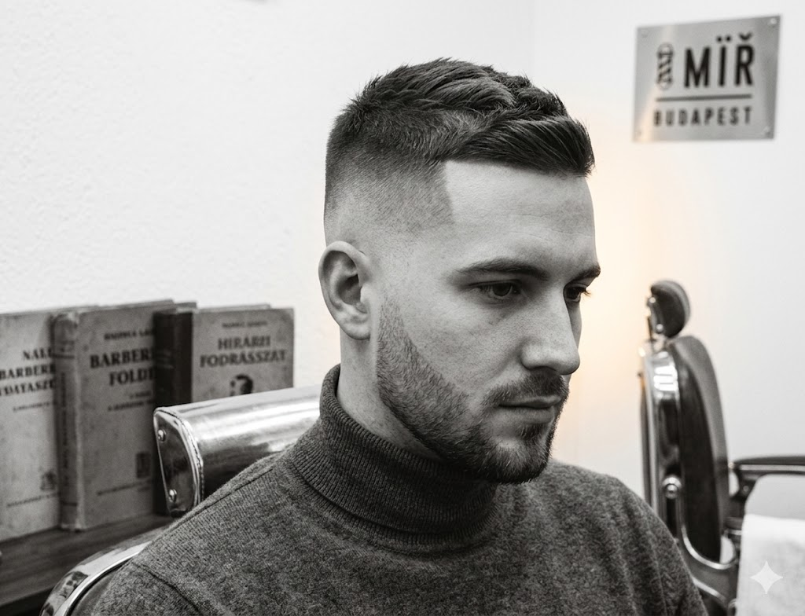

Miért számít az arcforma a hajvágásnál?
Sokan úgy választanak férfi frizurát, hogy megnéznek néhány képet és azt mondják a borbélynak: "ezt kérem". A gond az, hogy ami az egyik emberen tökéletesen mutat, az a másikon teljesen más hatást kelt – és ennek leggyakoribb oka az arcforma figyelmen kívül hagyása.
A profi barber shopokban – így a Bosphorus barber shopban is – a konzultáció során az első lépés mindig az arcforma felmérése. Ez alapján tudja a borbély meghatározni, hogy milyen arányok, milyen oldalsó hossz és milyen tetőrész illik az adott archoz. Egy jól megválasztott férfi frizura kiemeli az előnyös vonásokat, elfedi a kevésbé kedvező arányokat – és természetesen illeszkedik a személyiséghez.

A négy fő arcforma és a hozzájuk illő férfi frizurák
Az arcformák általában négy fő típusba sorolhatók – bár a legtöbb ember valahol a kettő között van. Az alábbi útmutató segít eligazodni, hogy melyik férfi hajvágás, milyen fade technika és milyen tetőrész illik a te arcformádhoz.
Kerek arc
A kerek arcnál az arc szélessége és magassága közel azonos, az állvonal lekerekített. A cél: megnyújtani az arcot, szűkíteni az oldalakat.
- Magas fade – szűkíti az oldalakat
- Textúrált tetőrész – magasságot ad
- Pompadour, quiff – felfelé irányítja a figyelmet
- Kerülendő: egyenletes, tömb szerű vágás
Szögletes arc
Az erős állkapocs és széles homlok jellemzi. Az arc erőteljes karaktert sugároz – a frizurának ezt kell kiegyensúlyozni, nem elnyomni.
- Taper fade – lágyabb átmenet az oldalon
- Textured crop – természetes, lazább tetőrész
- Hullámosabb, laza stílusok is jól állnak
- Kerülendő: nagyon kemény, egyenes kontúrok
Ovális arc
Az ovális arcforma a leguniverzálisabb – szinte minden férfi frizura jól mutat rajta. A homlok kissé szélesebb az állkapocsnál, az arányok harmónikusak.
- Szinte bármilyen fade technika működik
- Undercut, crop, pompadour, buzz cut
- A személyiséghez és hajtípushoz igazított stílus
- Kerülendő: az arcot szélességben növelő vágások
Hosszúkás arc
A hosszúkás vagy téglalap alakú arcnál az arc magassága jóval nagyobb a szélességénél. A cél: szélességet adni, rövidíteni a vizuális hatást.
- Oldalas elválasztás – szélességet ad
- Texturált, oldalra fésült stílusok
- Alacsony fade – nem hangsúlyozza a hosszúságot
- Kerülendő: magas fade, nagyon felfelé álló tetőrész
Melyik fade technika illik az arcformádhoz?
A fade – legyen az skin fade, taper fade vagy high fade – az egyik legelterjedtebb férfi hajvágási technika Budapesten. De nem minden fade egyforma, és az arcformától függően más-más változat a legelőnyösebb.
A skin fade például drámai, éles átmenetet ad – ez kerek arcnál kimondottan előnyös, mert szűkíti az oldalakat és felfelé irányítja a figyelmet. Szögletes arcnál ugyanez az eredmény túl kemény lehet – ilyenkor a taper fade lágyabb, természetesebb összhatást nyújt. Hosszúkás arcnál az alacsony fade a legelőnyösebb, mert nem nyújtja tovább az arcot.
- Kerek arc + high fade: megnyújtja az arcot, szűkíti az oldalakat
- Szögletes arc + taper fade: lágyítja az erős állkapocs vonalát
- Ovális arc + bármilyen fade: szinte minden változat előnyös
- Hosszúkás arc + low fade: nem növeli tovább az arc látszólagos magasságát
Népszerű férfi frizurák arcformánként – 2026-ban
A trendek változnak, de az arcformához illő hajvágás elve örökérvényű. Az alábbi stílusok 2026-ban is a legnépszerűbb férfi frizurák közé tartoznak Budapesten – és mindegyiknél megmutatjuk, melyik arcformához illenek leginkább.
- Textured crop – kerek és szögletes archoz ideális, mert a tépett, természetes tetőrész lágyítja az arányokat
- Skin fade + hosszabb tetőrész – kerek archoz a legelőnyösebb kombináció, megnyújtja az arcot
- Buzz cut – ovális és szögletes archoz különösen jól áll, erős, maszkulin hatást ad
- Mullet (modern változat) – ovális archoz ideális, elöl rövidebb, hátul karakteres hossz
- Pompadour – kerek és hosszúkás archoz egyaránt alkalmas, de más-más magassággal
- Oldalas elválasztásos vágás – hosszúkás arcnál adja a legjobb szélességi hatást
- Undercut – szögletes és ovális archoz jól illik, karakteres, modern összhatás
Hogyan találod meg a számodra legjobb férfi frizurát?
Az arcforma egy kiindulópont – de nem az egyetlen szempont. A haj sűrűsége, növekedési iránya, a hajtípus és az életstílus mind befolyásolják, hogy melyik férfi hajvágás működik a legjobban a hétköznapokban.
Éppen ezért a legjobb megoldás nem az, hogy képeket mutogatsz egy borbélynál és azt mondod: "ezt kérem". A legjobb megoldás egy konzultáció, ahol a borbély megvizsgálja az arcformádat, a hajadat, és javaslatot tesz – esetleg több lehetőséget is felvet – mielőtt bármit is elvágna.
A Bosphorus barber shopban ez az alapfelállás. Minden vendégnek először feltesznek néhány kérdést, megnézik az arcformát, és csak utána kezdik el a vágást. Ez az oka annak, hogy az eredmény következetesen jó – nem véletlenszerű.
- Konzultáció minden hajvágás előtt – arcforma, hajtípus, életstílus alapján
- Személyre szabott javaslatot kapsz, nem sablonmegoldást
- Tapasztalt borbélyok, akik ismerik az összes modern férfi hajvágási technikát
- Budapest 7. kerületében, könnyen elérhető – barber Budapest, barber Blaha közelében
Találd meg a te arcformádhoz illő frizurát
Kerek, szögletes, ovális vagy hosszúkás arc – a Bosphorus barber shopban minden vendég személyre szabott tanácsot és precíz hajvágást kap. Foglalj most, és tapasztald meg, milyen, amikor a frizura valóban illik hozzád.